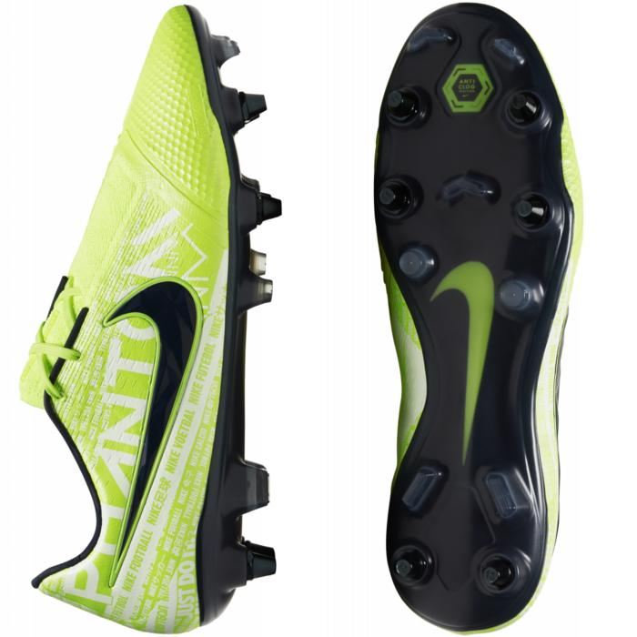
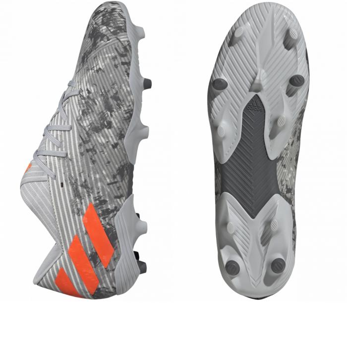
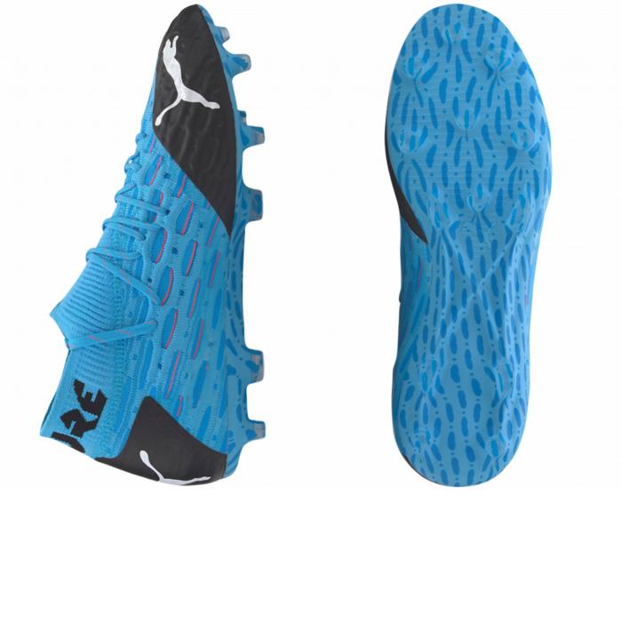
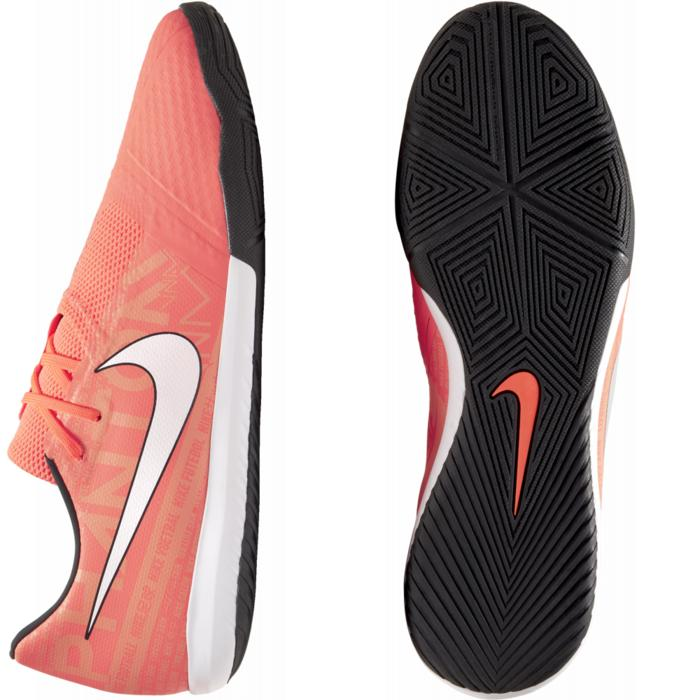
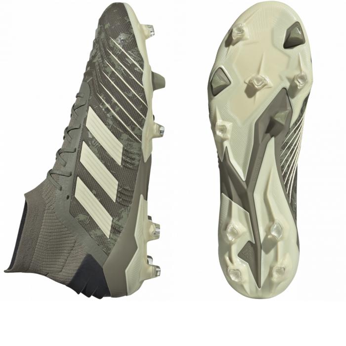

Demandez votre devis
Veuillez écrire votre demande
NIKE PHANTOM VENOM
Les Nikes Phantom Venom Elite SG-Pro Anti Clog, vos meilleures amies pour les terrains gras
Image
Description
Semez la peur et la destruction chez vos adversaires avec la Phantom Venom Elite SG-Pro Anti-Clog Traction du pack NIKE Football #NewLights qui est conçue pour des frappes puissantes et précises qui permettent de remporter les matchs. Les arêtes sur le cou-de-pied donnent un effet au ballon pour contrôler sa trajectoire. Le matériau Anti-Clog Traction sur la plaque de semelle empêche la boue de coller. L'empeigne Flyknit est souple et respirante, et présente des câbles Flywire pour un excellent maintien du pied. Les arêtes sur le cou-de-pied donnent un effet au ballon pour des frappes précises et puissantes. La pointe et l'avant-pied sont texturés assurant ainsi un meilleur contrôle du ballon. La plaque est composée de crampons métalliques amovibles qui offrent une adhérence optimale sur les terrains gras et boueux. La technologie Anti Clog Traction permet d'éviter à la boue de coller aux crampons pour une meilleure adhérence.
Les renforts en mousse enveloppent le talon pour une stabilité optimale de la voûte plantaire
Couleur affichée : Volt/Volt/Obsidienne
Personnalisation possible
Prix: 199.05€
ADIDAS NEMEZIZ
Avec les ADIDAS NEMEZIZ 19.2 FG ENCRYPTION de Messi, spécialiste des petits espaces
Image
Description
Si vous êtes prêt à tout pour mener votre équipe à la victoire, vous pourrez compter sur la Nemeziz 19.2 FG pour terrains secs du pack Encryption. Son motif camouflage est cette fois-ci sur la partie basse de la tige accompagné de touches de orange au niveau des trois bandes et du marque Nemeziz, ce modèle se veut particulièrement réussi. La tige textile résistante de cette chaussure de football offre un toucher au plus près du ballon pour laisser parler ta technique. Le col stretch maintient le pied et permet de l'enfiler facilement.
Chaussant médium
Fermeture à lacets
Tige textile résistante
Technologie Tension Tape pour un chaussant adapté et personnalisé
Semelle extérieure injectée en TPU pour terrain souple
Configuration de crampons Agility
Couleur du produit : Grey Two / Solar Orange / Chalk White
Personnalisation possible
Prix: 109.95€
PUMA FUTURE
La nouvelle PUMA FUTURE 5.1 NETFIT MIX FG/AG FLASH vous apportera le touché de balle du champion du monde Antoine Grizemann
Image
Description
Avec sa matière supérieure en textile qui attire l'oeil et son design particulièrement fluide, la FUTURE 5.1 pour pelouse naturelle dure ou artificielle en coloris bleu ciel et noir du pack PUMA Flash représente la fusion parfaite de la mode foot tendance et de l'innovation orientée vers l'avenir. Grâce à sa matière en textile unipièce dotée de la technologie de laçage NETFIT, cette chaussure performance s'adapte à tous les types de pied et soutient chaque mouvement via sa semelle extérieure ultra légère et réactive.La technologie révolutionnaire GripControl Pro garantie un contrôle parfait du ballon et sa couche supérieure est construite en une seule pièce, avec une chaussette tissée de manière ergonomique qui offre toujours un ajustement et une stabilité optimale. Aucune chaussure ne vous offrira plus de traction, d'agilité et de dynamisme sur les pelouses naturelles sèches ou sur les terrains artificiels que la FUTURE 5.1. La chaussure FUTURE est utilisée par des joueurs comme Antoine Griezmann, Marco Reus, Jan Oblak, Yann Sommer ou Luis Suárez.
NETFIT : optimisez la forme individuelle de votre chaussure à l'aide d'un laçage entièrement adaptable
Coupe basse
Matière supérieure tricotée unipièce avec technologie NETFIT
Semelle extérieure ultra légère et réactive avec combinaison de crampons coniques et longitudinaux
Laçage continu pour un maintien parfait
Personnalisation non disponible
Prix: 179.95€
NIKE PHANTOM VENOM ACADEMY IC
Devenez le roi du five avec cette paire de Nike Phantom
Image
Description
La Nike Phantom Venom Academy IC du pack #PhantomFire aux nombreux détails de finition est destiné au jeu en salle, elle est conçue pour des frappes puissantes et précises qui permettent de remporter les matchs. Les arêtes sur le cou-de-pied donnent un effet au ballon pour contrôler sa trajectoire, tandis que la semelle extérieure avec motif à chevrons offre l'adhérence nécessaire pour vous surpasser à tout moment.
Empeigne en Mesh avec renfort NIKESKIN épousant la forme du pied
Arêtes sur le cou-de-pied pour des frappes précises et puissantes
Semelle intermédiaire apparente en mousse, légère et réactive
Semelle extérieure conçue pour adhérer sur les surfaces en salle
Système de laçage asymétrique qui étend la zone de frappe
Mesh extensible recouvrant la partie inférieure des lacets
Couleur affichée : Mangue brillant/Orange impulsion/Anthracite/Blanc
Personnalisation possible
Prix: 69.95€
ADIDAS PREDATOR
La paire de chaussure typique du gardien de but porté notamment par Ter Stegen, Navas ou Neuer
Image
Description
Portées par des gardiens de but comme Marc-André ter Stegen, Manuel Neuer ou Keylor Navas, les PRedator 19.1 FG pour terrains secs et souples du pack adidas Encryption disposent d'un nouveau coloris camouflage à base de kaki du plus bel effet. Contrôle ultime garanti avec la technologie Controlskin qui permet de garder le contrôle du ballon dans toutes les conditions. Le chausson ajusté de la tige adidas Primeknit suit les contours du pied pour offrir un maintien ciblé qui favorise les mouvements naturels. a construction innovante Controlframe moulée par injection aide à stabiliser lors des accélérations sur terrains souples. Les crampons avec bouts hybrides amplifient la rotation et l'adhérence.
Chaussant médium
Fermetures à lacets
Col adidas Primeknit
Tige en maille avec revêtement texturé Controlskin
Semelle extérieure pour terrain secs
Bouts des crampons hybrides
Chaussette ergonomique intégrée pour un ajustement parfait
Couleur du produit : Legacy Green / Sand / Solar Yellow
Personnalisation possible
Prix : 199.95€